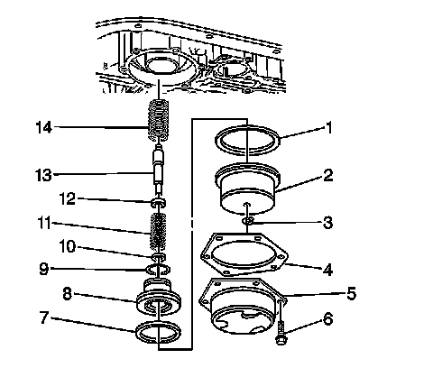

Reverse Servo Replacement
Reverse Servo Replacement
Removal Procedure

1. Remove the transmission filter.
2. Remove the rear servo from the transmission case in the following order:
1. Cover bolts (6)
2. Cover (5)
3. Cover gasket (4)
4. Bottom retaining clip (3)
5. Servo piston (2)
6. Outer ring oil seal (1)
7. Inner ring oil seal (7)
8. Accumulator piston (8)
9. Piston seal (9)
10. Washer (10)
11. Servo spring (11)
12. Servo spring retainer (12)
13. Selective pin (13)
14. Accumulator spring (14)
Installation Procedure
1. Install the rear servo to the transmission in the following order:
1. Accumulator spring (14)
2. Selective pin (13)
3. Servo spring retainer (12)
4. Servo spring (11)
5. Washer (10)
6. Piston seal (9)
7. Accumulator piston (8)
8. Inner ring oil seal (7)
9. Outer ring oil seal (1)
10. Servo piston (2)
11. Bottom retaining clip (3)
12. Cover gasket (4)
13. Cover (5)
14. Cover bolts (6)
Notice: Refer to Fastener Notice.
2. Tighten the cover bolts.
Tighten the bolts to 24 N.m (18 lb ft).
3. Install the transmission filter.
Important: It is recommended that transmission adaptive pressure (TAP) information be reset.
Resetting the TAP values using a scan tool will erase all learned values in all cells. As a result, the engine control module (ECM), powertrain control module (PCM) or transmission control module (TCM) will need to relearn TAP values. Transmission performance may be affected as new TAP values are learned.
4. Reset the TAP values. Refer to Transmission Adaptive Functions.